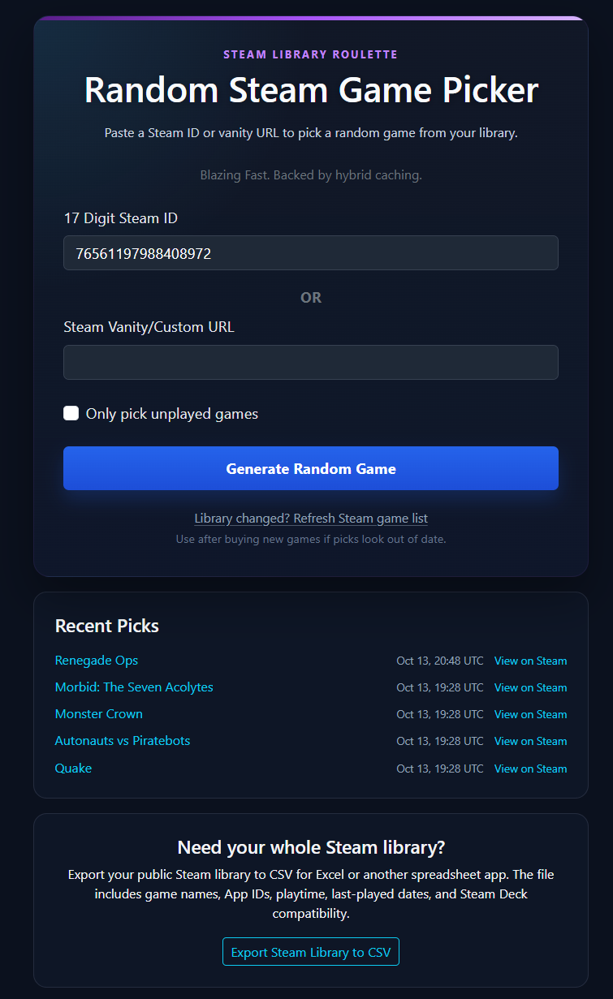
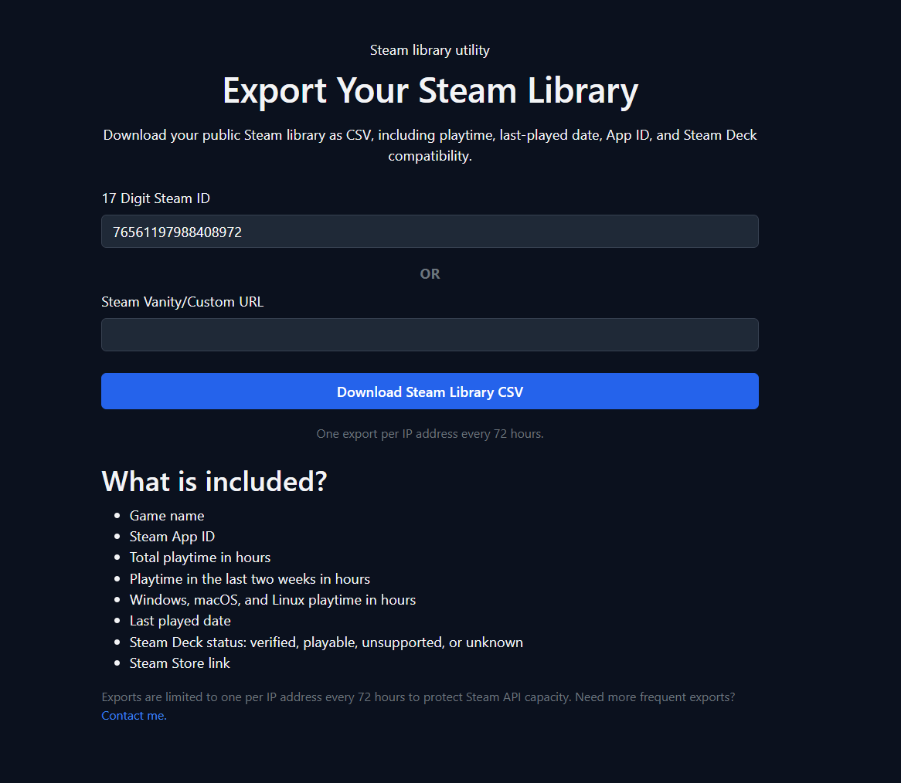

No Steam login required
The public picker and exporter work from public library data. That keeps the basic utility simple and avoids asking for account access just to choose a game.
projects/random-steam
A fast Steam backlog picker and library exporter built for the moment when I have hundreds of games, no idea what to play, and absolutely no patience for waiting eight seconds or watching a fake roulette wheel spin before I can pick again.
.NET 10 · Blazor · ASP.NET Core · Steam Web API · Steam Store API · HybridCache · SQLite
Random Steam Game started because the other Steam-library pickers I tried were too slow for the way I wanted to use them. Some took several seconds between picks. Others added roulette animations that made the wait feel even longer.
I wanted the opposite: hit Choose Again , get another game immediately, and keep doing that until something catches my attention. Speed was not an optimization I bolted on later; it was the reason the project existed in the first place.
The picker only needs a public Steam library. It accepts a numeric Steam ID, vanity name, or Steam Community URL, and it does not require Steam sign-in.

A pick starts with the user's public Steam library. The application resolves vanity input when necessary, loads the library, filters out games that do not match the current options, removes anything blocked in that browser, and chooses from the remaining pool.
Unplayed-only mode narrows the pool to games with no recorded Steam playtime. Browser-local exclusions make it possible to keep hammering the picker without repeatedly getting something I already know I do not want.
Repeated picks should not require another expensive trip through Steam every time. The application caches library and Store API data so the common path can reuse work it has already done instead of treating each click like a brand-new session.
The current application uses ASP.NET Core HybridCache with memory and SQLite-backed caching, plus rate limiting and bounded upstream access. The result is that once the useful Steam data is available, the picker can spend its time choosing a game rather than waiting on the network.
The design goal is simple: the Choose Again button should feel cheap enough to abuse.
The CSV exporter was added after the picker itself, partly because other Steam-library tools offered exports and I wanted Random Steam Game to be useful for that job too.
It can export a public library with game names, App IDs, total and recent playtime, per-platform playtime, last-played timestamps, Steam Store links, and Steam Deck compatibility.
I would like to make the export richer over time, but that has a real cost. The more per-game metadata I add, the more upstream Steam work the export needs to do. On a library with thousands of games, a feature that sounds like "just add another column" can turn into a large number of API requests, more rate-limit pressure, and a much longer export.

The public picker and exporter work from public library data. That keeps the basic utility simple and avoids asking for account access just to choose a game.
Steam identity, picker preferences, and blocked games can live in browser cookies without pretending they are synchronized, account-backed profiles.
Export data such as Steam Deck compatibility can fall back to an unknown state instead of throwing away the entire library export.
The picker should stay quick, while heavier operations such as bulk exports have their own concurrency and cooldown rules so one feature cannot casually burn through Steam API capacity.
Random Steam Game is primarily a normal public web application, but I also use it as one of my experiments in deploying the same application across alternate networks such as DN42, Yggdrasil, and I2P.
Those deployments use an alternate-network mode that can disable remote browser assets, adjust canonical metadata and cookie behavior, and avoid assuming a conventional public HTTPS ingress. Steam API access still happens server-side.
Random Steam Game is free to use. I am open to one-time support and feature sponsorship if somebody wants to help fund development or put more weight behind something on the roadmap.
Sponsorship can help prioritize work, but it does not buy control of the project or guarantee an exact delivery date unless we explicitly agree on a separate custom scope.
Random Steam Game is actively deployed and used. The picker is stable, while the library exporter and surrounding features continue to grow as I find useful additions that do not turn every large Steam library into an API stress test.